Cylinder Block Assembly (2GR-FE) Reassembly |
| 1. Install Straight Pin |
Using a plastic-faced hammer, tap in the straight pins at the positions shown in the illustration.
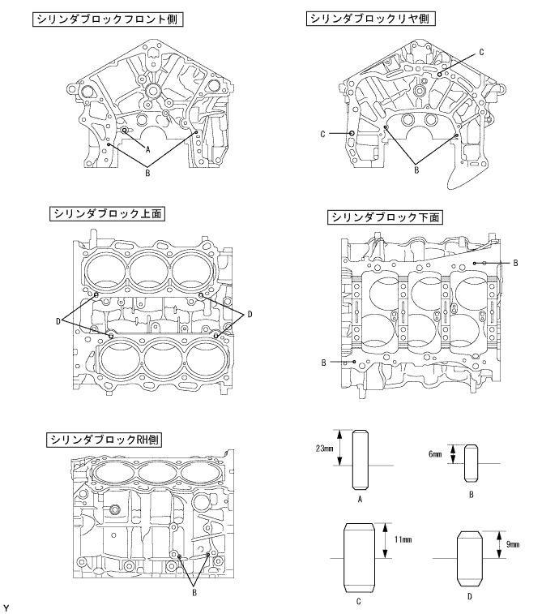
| Straight Pin Type | Protrusion Height [mm] |
|---|---|
| A | 23 |
| B | 6 |
| C | 11 |
| D | 9 |
| 2. Install Stud Bolt |
Using E8 and E10 torx socket wrenches, install the stud bolts at the positions shown in the illustration.
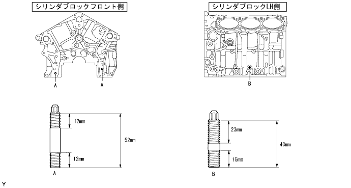
| 3. Install Oil Nozzle Sub-assembly NO.1 |
 |
Using a socket hexagon wrench (5mm), install the 3 oil nozzles No.1.
| 4. Install Piston Sub-assembly (with Pin) |
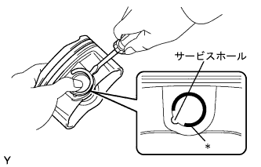 |
Using a small screwdriver, install a new piston pin hole snap ring on one side only.
Heat the piston to approximately 80°C.
Apply engine oil to the piston pin and the connecting rod small end.
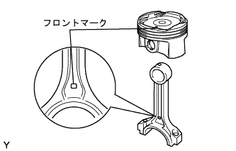 |
Align the front mark of the piston with the front mark of the connecting rod, and push in the piston pin with your thumb until it contacts the snap ring.
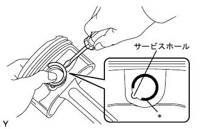 |
Using a small screwdriver, install a new piston pin hole snap ring.
| 5. Install Piston Ring Set |
Install the oil ring expander and 2 oil ring side rails by hand.
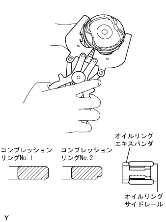 |
Using a piston ring expander, install compression ring No.1 and compression ring No.2.
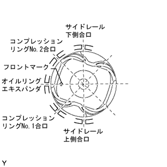 |
Position the piston ring end gaps as shown in the illustration.
| 6. Install Crankshaft Bearing |
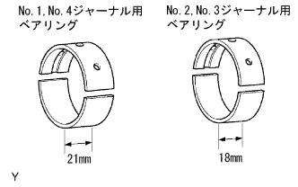 |
Clean the main journals and the inner and outer surfaces of the bearings.
Install Upper Bearing
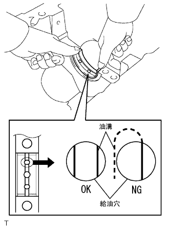 |
Install the upper bearing to the cylinder block so that it is near the center.
Install Lower Bearing
 |
Install the lower bearing to the bearing cap so that it is near the center.
Using a vernier caliper, measure the distance between the bearing cap edge and the lower bearing edge.
| 7. Install Crankshaft Thrust Washer Set |
Apply engine oil to the surfaces of the thrust washer set.
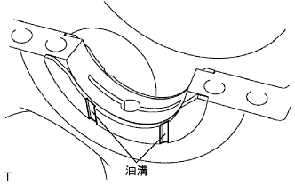 |
Install the thrust washer set to the front and rear sides of journal No.2 on the cylinder block with the oil grooves facing outward.
| 8. Install Crankshaft |
Apply engine oil to the upper bearing surfaces and install the crankshaft.
Apply engine oil to the lower bearing surfaces.
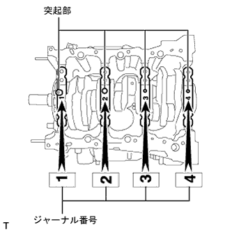 |
Check the protrusions and journal numbers of the bearing caps and temporarily place the caps on the block.
Apply engine oil to the threads and under the heads of the bolts.
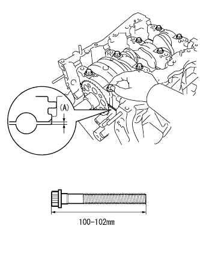 |
Push in the bearing cap until the clearance (A) between the cylinder block and bearing cap is 6mm or less, and temporarily tighten the 8 bolts at the positions shown in the illustration.
 |
Using a plastic-faced hammer, lightly tap the bearing cap to ensure it is fully seated.
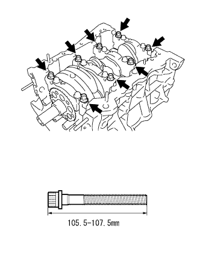 |
Apply engine oil to the threads and under the heads of the bolts and temporarily tighten the 8 bolts.
 |
Using a socket wrench (14mm), temporarily tighten the bolts in 2-3 passes in the sequence shown in the illustration, then tighten them to the specified torque.
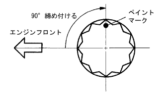 |
Mark the front of the bolt heads with paint.
Using the paint marks as a guide, tighten each bolt an additional 90° in the tightening order.
Check that all paint marks have been turned 90° in the tightening direction.
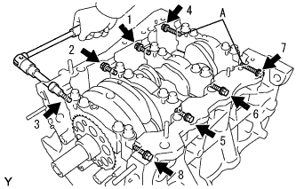 |
Install new seal washers, temporarily tighten the bolts in 2-3 passes in the sequence shown in the illustration, then tighten the 8 bolts to the specified torque.
| Bolt Type | Length Under Head (mm) |
|---|---|
| Except A | 30 |
| A | 45 |
| 9. Install Connecting Rod Bearing |
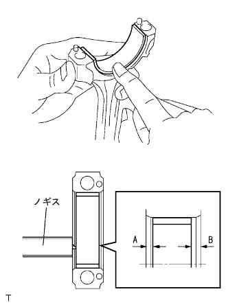 |
Install the connecting rod bearings to the connecting rods and bearing caps.
Using a vernier caliper, measure the distance between the connecting rod edge and the upper bearing edge.
Using a vernier caliper, measure the distance between the bearing cap edge and the lower bearing edge.
| 10. Install Piston with Connecting Rod |
Apply engine oil to the cylinder walls, the piston circumference and the connecting rod bearing surfaces.
Check the positions of the piston ring end gaps again.
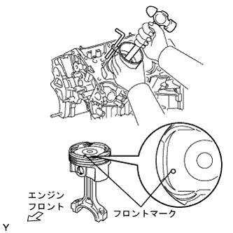 |
Check the front mark and, using a piston ring compressor, install the piston with connecting rod.
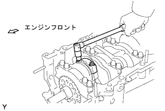 |
Check the matching of the connecting rod and cap and the front mark of the cap, and install the cap to the connecting rod.
Apply a light coat of engine oil to the threads and seats of the bolts.
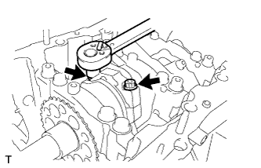 |
Using a socket wrench (12mm 12 square), temporarily tighten the bolts in 2-3 passes, then tighten them to the specified torque.
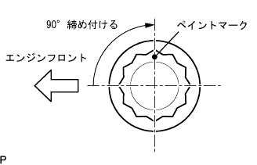 |
Mark the front of the bolt heads with paint.
Using the paint marks as a guide, tighten each bolt an additional 90°.
Check that the crankshaft turns smoothly.